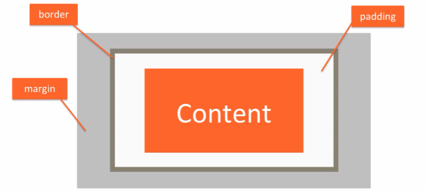

The Box Model

Body have defult margin with 8px in order to reset the page we use && border for clarify the box that'all
The margin and padding will add in the hight and width of the box but if we use box-sizing: border-box; the padding and margin will be inside the declared width value also the border-box is not inherit propertie
If the content dose't fill out in box use Overflow: Auto
Right margin of one element that touches the left margin of another element creates a combined margin that is equal
to the sum of both margins.
top margin of one element that touches the buttom margin of another element creates a combined margin that is bigger
margin btw both